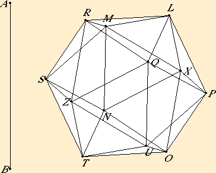

*** If you can read this, you're only seeing an image, not the real java applet! ***
I began writing this applet in Feb. 1996. The current verion is 2.2 which fixes a couple of bugs in 2.0 and has a new construction to find harmonic conjugate points. Version 2.0 (May, 1997) does three-dimensional constructions whereas the earlier version 1.3 only did plane constructions. Version 2.0 also has many minor improvements. It takes a while to test everything. Please send a note if you find any bugs. They'll be fixed as soon as possible. (Note that arcs and sectors on slanted planes cannot yet be illustrated.) Also, there may be still later versions than 2.2 with more functionality.
This geometry applet is being used to illustrate Euclid's Elements. Above you see an icosahedron, that is, a regular 20-sided solid, constructed according to Euclid's construction in proposition XIII.16.
Another example using this Geometry Applet illustrates the Euler line of a triangle.
Here's how you can manipulate the figure that appears above. If you click on a point in the figure, you can usually move it in some way. A free point *, usually colored red, can be freely dragged about, and as they move, the rest of the diagram (except the other free points) will adjust appropriately. A sliding point *, usually colored orange, can be dragged about like the free points, except their motion is limited to a straight line, a circle, a plane, or a sphere, depending on the point. Other points can be dragged to translate the entire diagram. But if a pivot point * appears, usually colored green, then the diagram will be rotated and scaled around that pivot point.
Try dragging around some of the points in the diagram above.
Also, if you type r or the space key while the cursor is over the diagram, then the diagram will be reset to its original configuration. If you type u or return the figure will be lifted off the page into a separate window. Typing d or return while the cursor is over the original window will return the diagram to the page. Note that you can resize the floating window to make the diagram larger.
name=e[1] value="A;point;free;50,50;black;magenta"Each element has a number, a name, an element class, a construction method, and construction data. Optionally colors may be specified. The number of this element is 1, which means that it is the first element to be created. Its name is A. Its class is point. Its construction method is free, which means it can be freely dragged about. Its construction data is 50,50, which means that it will be initially placed at pixel coordinates (50,50). When it is displayed, its name A will be colored black, but the dot representing the point will be magenta.
(Several of the construction classes are supported by subclasses of the Element class as described below.)
Specific colors may be given by their red, green, and blue components as six hex digits in an rrggbb format.
Alternatively, a color can be given as a triple of decimal numbers separated by commas to indicate hue (0 to 360), saturation (0 to 100), and brightness (0 to 100).
The source files *.java are zipped in the file source.zip. The class files *.class are zipped, but uncompressed, in the file Geometry.zip.
David E. Joyce
Department of Mathematics and Computer Science
Clark University
Worcester, MA 01610
My homepage.